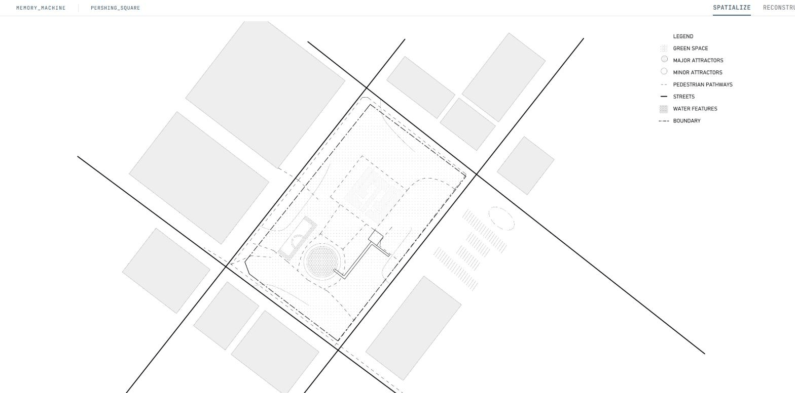

MEMORY
MACHINE
SCI-ARC // THESIS 2026
[ MEM-MACH-v2.1 // SYSTEM ACTIVE ]
Bottega Louie
Commercial Interior · Los Angeles
Nakagin Capsule Tower
Kisho Kurokawa · Tokyo · 1972

O.T. Johnson Building
356 S. Broadway · Los Angeles

Scrape historical archives, visitor reviews, and spatial coordinates.
Extract and parse qualitative and quantitative data using markdown and JSON files.
Procedurally rebuild the structural massing via python scripts and rhino/blender mcp.
Compiles forensic information into Memory Machine database, generates diagrams, compiles spatial data and implements 3D output.
Los Angeles, CA — Downtown · Est. 1866
Los Angeles' oldest public park. A site of dense public memory — historically a speaker's corner, political gathering ground, and urban anchor.

Legorreta Campanile
1994 Redesign · Ricardo Legorreta
Subterranean Parking
Five Levels Below Grade
The Open Plaza
Near-Zero Shade Canopy
Dual-Grid Alignment
Two Surveys, One Block
Generative Site Massing
Iterative Park Layouts

Depth-Guided Render Pipeline
From inside the live 3D reconstruction, orbit and zoom into any part of the massing in perspective view, then capture that exact camera's true depth pass and route it through a local ComfyUI FLUX.2 workflow for a structurally-faithful, photoreal render — closing the loop between procedural generation and generative visualization.